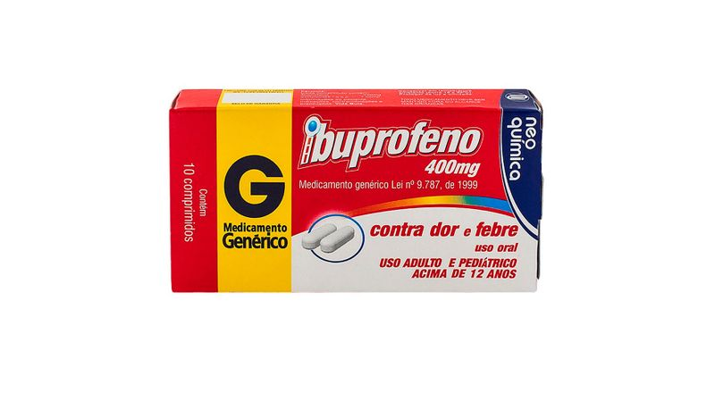
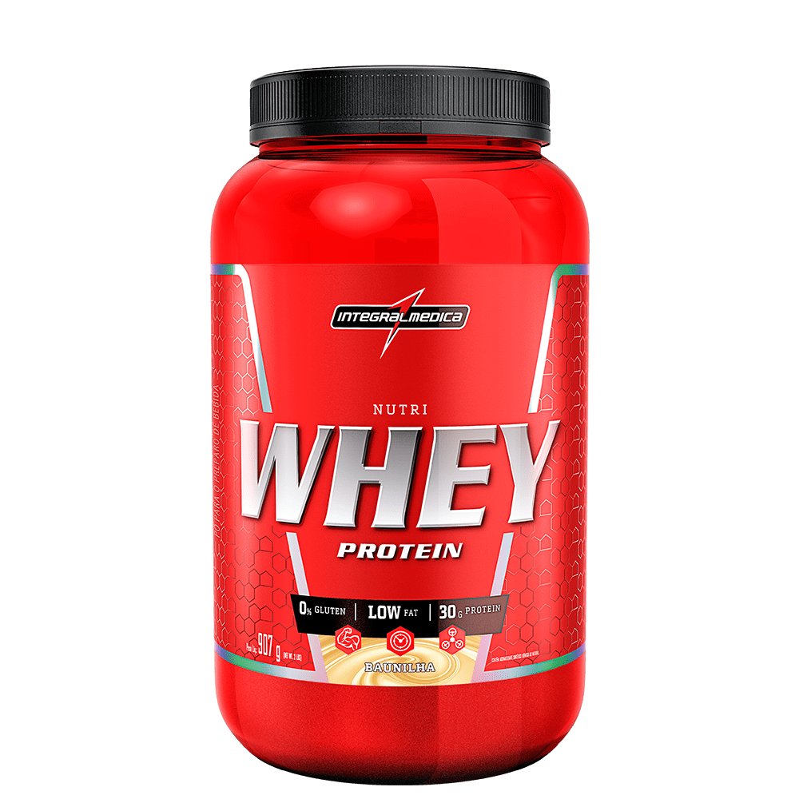

-
Ibuprofeno
O ibuprofeno é um anti-inflamatório não esteroidal (AINE). Trata-se de um princípio ativo que age contra inflamações não tão intensas, sendo comumente indicado contra febre e dores diversas.
R$25,00
-
Cenevit
Cenevit está indicado em todos os estados em que há deficiência ou aumento das necessidades de vitamina C no organismo. Modo de usar: Cenevit comprimido efervescente (uso adulto): tem sua dose recomendada de 1 comprimido ao dia, ou a critério médico.
R$18,00
-
Neosoro
O princípio ativo do Neosoro® de uso adulto é um descongestionante. Desse modo, é indicado no tratamento da congestão nasal (obstrução nasal) para o alívio dos sintomas em resfriados, quadros alérgicos nasais, rinites e rinossinusites.
R$5,00
-
Doralgina
Para que serve Doralgina serve para febre? Doralgina serve pra febre? Um dos princípios ativos da Doralgina é a Dipirona. Uma das funções da Dipirona é abaixar a febre. Portanto, a Doralgina consegue abaixar a febre..
R$15,00
-
Centro Zinco

Centrozinco é um suplemento de vitaminas e minerais desenvolvido para suprir as prováveis deficiências nutricionais que a dieta ou outras condições biológicas podem originar. Os nutrientes de sua formulação estão relacionados com o metabolismo e a produção de energia em nosso organismo.
R$35,00
-
Whey Protein
O aumento de volume que você procura está na suplementação com Nutri Whey Protein, o hipercalórico Integralmédica com alta concentração de proteína, são 30 g por porção para máximo ganho de massa muscular...
R$71,92